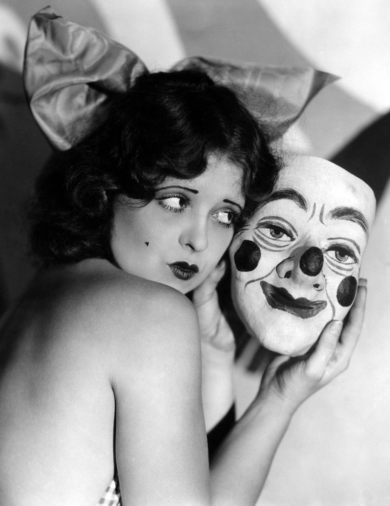
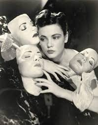
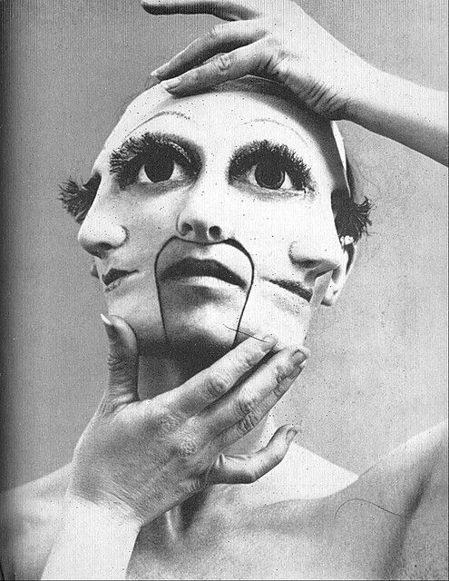
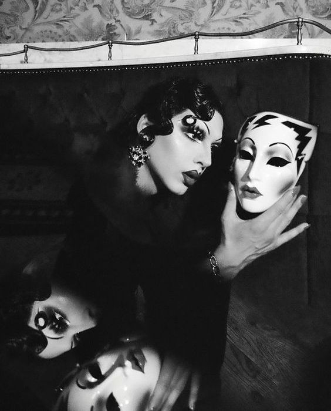

Masks both conceal and reveal. They hide identity while also expressing metaphorical meaning, calling attention to the ways identity itself is performed. In visual culture, masks often highlight the tension between one’s public image and one’s private self, suggesting that everyday life involves a kind of ongoing performance.
Clara Bow, a major star of 1920s silent cinema, was famously photographed beside a clown mask, an image that underscores the contrast between her vibrant public persona and the pressures behind it. The juxtaposition hints at the split between her constructed celebrity image and the reality of her personal life. Bow also played a clown in Dangerous Curves (1929), a role that further emphasized the incongruity between her on-screen performances and her off-screen identity.
Gene Tierney, a defining figure of Hollywood’s Golden Age, was known for her striking beauty and carefully crafted star image. Her presence in photographs often points to the ways femininity, elegance, and desirability were shaped, and masked, by the studio system.
“The Three Faces of Hélène Cixous” references the influential philosopher and writer whose work reshaped feminist and post-structuralist thought. Drawing from concepts like the id, ego, and superego, Cixous critiques how patriarchal cultures build oppositional hierarchies, male/female, mind/body, reason/emotion, that ultimately privilege the masculine. Her ideas suggest that when identity is filtered through these hierarchies, women are compelled to navigate multiple “faces” to exist within male-dominated structures.
Violet Chachki, a contemporary drag performer and fashion icon, uses masks and mirrors to disrupt and obscure the viewer’s perception. Her imagery plays with reflection, distortion, and concealment, highlighting how performance can both fragment and reclaim identity.
➤
➤